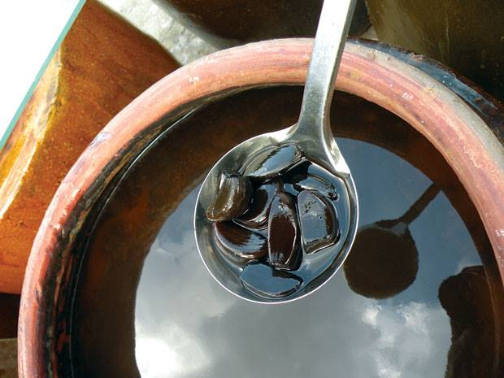
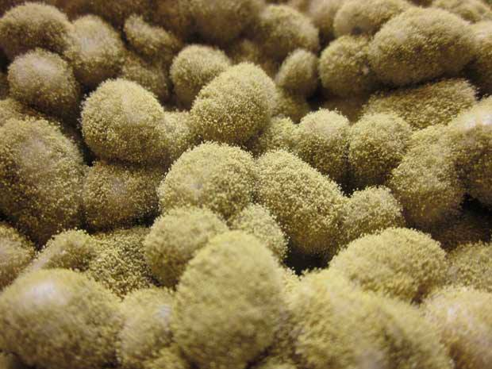
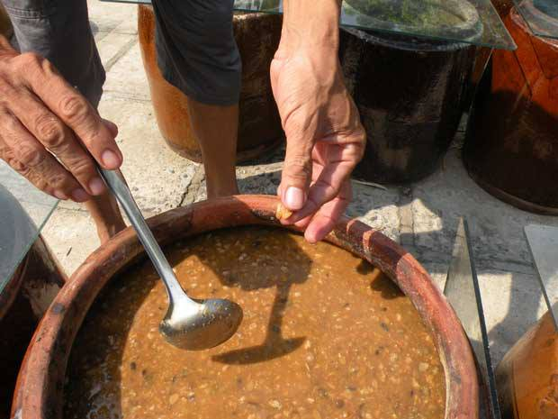
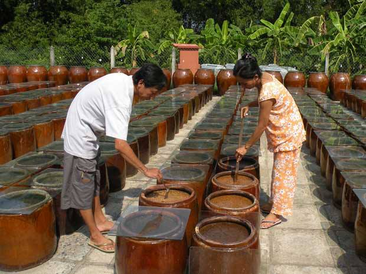

Nước tương Nhật vẫn chậm tiến
16.08.2013Người Nhật nhìn loại nước tương “mì ăn liền” làm từ bã đậu nành đã lấy hết chất béo mà một thời toàn thịnh ở Việt Nam có lẽ chỉ bằng một nửa con mắt.

Nước tương dòng tamari của cơ sở Thuần Chay ở ấp 7, xã Tân Tây, huyện Gò Công Đông, tỉnh Tiền Giang. Ảnh: Tấn Tới
Thậm chí những kẻ theo chủ nghĩa “origin”, nghĩa là phải thuần chất, không pha loãng, rút ngắn quy trình kiểu đi tắt đón đầu, xem thứ nước tương ấy chắc chỉ bằng một phần tư con mắt.
Nhưng rồi thứ văn hoá thô lậu “mì ăn liền” về nước tương ấy cũng suy tàn bởi một thứ nước chấm gồm nước cốt tương trích xuất từ đậu nành dưới dạng sản xuất quy mô, bỏ qua qui trình ủ tự nhiên pha với nhiều phụ gia. Nền văn hoá nước tương ấy cáo chung. Hoạ chăng chỉ còn lại văn hoá nước tương có quy trình ủ tự nhiên từ sáu tháng đến một năm ở một số nhà chùa. Ở một địa chỉ nhỏ tại Gò Công, với loại nước tương tamari kiểu Nhật.
Thời gian gần đây, ở Việt Nam có luồng thông tin về một thứ nước tương lên men bằng công nghệ kiage của Nhật trong ba tháng. Người Nhật, nhất là người theo chủ nghĩa origin nghe được chắt sẽ phải khóc thét lên…
Nước tương Nhật cũng như miso (tương bột nhão) – một phối trộn gồm đậu nành, lúa mì, muối và men – là một sản phẩm lên men và có thời gian ủ. Tiếng Nhật gọi nước tương là shoyu, nghĩa là dầu thực phẩm lên men. Cũng có một số loại nước tương Nhật có cả gạo lên men hoặc amazake (một loại thức uống làm từ gạo lên men, có nồng độ cồn thấp hoặc không có), nhằm tạo vị ngọt. Lúa mì và/hoặc gạo cần thiết để nuôi men và phát triển vị ngọt trong nước tương.
Nước tương Nhật thường ít nhất là sáu tháng tuổi hoặc hơn. Nước tương tiêu chuẩn như koikuchi thường không có bất kỳ phụ gia nào, trong một số trường hợp một số chất được gia vào (thường là cồn) để kéo dài tuổi thọ trên kệ hàng, hoặc chất tạo ngọt để làm cho tương dịu hơn. Những chất phụ gia đó, theo luật Nhật, phải được ghi rõ trên nhãn.
Mấy loại nước tương?
Có năm loại shoyu truyền thống. Loại nước tương được dùng chủ yếu là do ảnh hưởng bởi nơi người Nhật đang sống, hoặc là nơi mà ẩm thực gia đình đã hình thành theo một quá trình lâu dài. Những bếp gia đình Nhật thường có một hoặc hai loại shoyu, trừ phi là gia đình rất có gu.
Loại phổ thông nhất là koikuchi shoyu. Koikuchi, theo đầu bếp Makiko Itoh viết trên justhungry.com, nghĩa là hắc khẩu. Koikuchi shoyu thường được bán trong các cửa hàng chuyên thực phẩm Nhật dưới nhãn hàng Kikkoman và Yamasa. Ở Nhật nó chiếm 80% thị phần, theo Trung tâm thông tin về nước tương (SOYIC).
Nó là shoyu được chọn lựa của vùng Tokyo/Kanto và miền Bắc. Koikuchi shoyu được làm với thành phần đậu nành và lúa mì bằng nhau, thêm muối và men.
Loại thông dụng thứ hai là usukuchi shoyu. Loại này có màu nhạt hơn, chủ yếu được dùng ở miền tây nước Nhật, thường là vùng Kansai (Kyoto/Osaka), và chiếm chừng 15% thị phần. Ẩm thực Kyoto truyền thống, vốn có nguồn gốc từ ẩm thực cung đình, màu đen thẩm của koikuchi shoyu được xem như hạ cấp và và làm hỏng vị cũng như sắc của thực phẩm. Nhưng cũng đừng nghĩ rằng màu sắc nhạt có nghĩa là ít mặn hơn. Độ mặn usukuchi khoảng 18-19% so với koikuchi 16%. Usukuchi shoyu được làm từ đậu nành và lúa mì, và thường được tăng độ ngọt bằng gạo lên men (kome Koji), gluten lúa mì hoặc amazake.
Một loại khác vốn trở nên phổ thùng ở miền Tây là tamari – có nghĩa là “bã chum”. Đó là một loại shoyu đặc, và gần như nhớt dẽo, có gốc từ vùng Chuubu, miền Trung Nhật với thành phố chính của vùng là Nagoya. Nó chủ yếu dùng như một loại nước chấm sashimi, và để hoàn thiện một số món trong tạo màu nâu đỏ và bóng, ví dụ như các món teriyaki. Tamari trở nên phổ biến ở miền Tây vì nó có tiếng là không có lúa mì. Điều này không nhất thiết, nhất là tamari làm theo phương pháp truyền thống. Nếu ai bị mắc bệnh không dung nạp gluten lúa mì nên đọc nhãn trước khi mua, vì cũng có loại tamari làm từ 100% đậu nành.
Sau cùng là hai loại shoyu thuần địa phương. Saishikomi shozu gốc từ tây nam Nhật, đặt biệt là hạt Yamaguchi. Nó độc đáo ở chỗ được chưng cất lại lần thứ hai – cũng là nghĩa của “saishikomi” - từ mẻ shoyu đã thành. Có nghĩa màu sắc đỏ nâu rất sậm, vị ít mặn, và ngọt cũng như thanh hơn các loại shoyu khác.
Rồi còn có shiro shoyu – nước tương trắng – gốc từ hạt Aichi. Màu nó còn nhạt hơn usukuchi shoyu và rất giống với nước dùng dashi được nấu với nhiều cá ngừ khô bào. Nó được các đầu bếp ở Nhật dùng để tạo vị cho một số món nhưng lại không bị nhiễm màu sậm của nước tương.
Cũng có lại nước tương giảm muối hoặc ít muối được gọi là genen hoặc teien là koikuchi shoyu mà hàm lượng muối bị lược bớt, chỉ còn từ 9-13%.
Thứ hạng shoyu
Thứ hạng shoyu được Bộ nông ngư lâm Nhật và một nhóm gọi là Hiệp hội nước tương Nhật định ra. Thứ hạng nước tương chính thức của Chính phủ gồm hạng đặc biệt (tokkyuu), hạng nhất (ikkyuu) và hạng tiêu chuẩn (hyoujun). Thứ hạng được dựa trên cấu trúc hoá học của nước tương, chủ yếu là amino acid và cồn. Hiệp hội nước tương Nhật thêm vào hai hạng cao hơn hạng đặc biệt là hạng tuyển (tokusen) và hạng cực tuyển (choutokusen).

Nấm meo xanh (Aspergillus Oryzae), “linh hồn” của nước tương Tamari nguyên dương ủ trên 3 năm và tương Miso, không những cho hương vị độc đáo mà còn giúp: thận lọc máu, trợ tim, giảm chứng đau đầu..., theo trường phái thực dưỡng Ohsawa.

Chuẩn của tương ngon là dù “chín” (ngấu) rục vẫn còn nguyên hạt, không bở.

Lò tương dưỡng sinh của vợ chồng anh Lê Kim Sơn, chủ cơ sở Thuần Chay, ở ấp 7, xã Tân Tây, huyện Gò Công Đông, tỉnh Tiền Giang, có công suất trung bình 100 lít/tháng. Với sân phơi rộng khoảng 400 mét vuông, gồm: 500 khạp, 70 lu (“kiệu”). Giá sỉ: 120.000đồng /lít, lẻ: 150.000 đồng/lít loại trên 3 năm.
KHỞI THỨC (THAM KHẢO JUSTHUNGRY.COM)
Sài Gòn Tiếp Thị
- Nước tương Nhật vẫn chậm tiến
- 16.08.2013
- Lạc vào xứ thần tương
- 14.08.2013
- Tamari, MISO và một cách sống
- 22.04.2013
- Nước tương dưỡng sinh Tamari nguyên dương
- 10.07.2010